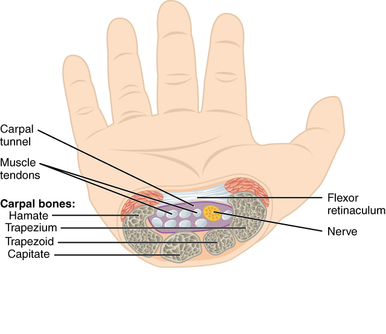

DX.1 — Syndrome du canal carpien
1. Définition
mediX définit le syndrome du canal carpien comme une plainte due à une lésion par compression du nerf médian dans le canal carpienmedix.
La définition exige une plainte du patient, et une simple compression du médian sans symptôme ne porte pas le nom du syndromemedix.
La lésion visée est celle du nerf médian, donc un déficit limité au nerf ulnaire ne répond pas à cette définitionmedix.
Le siège imposé est le canal carpien, ce qui place la compression au poignet et non dans l'avant-brasmedix.
mediX ajoute qu'un goulot anatomique constitutionnel est en général la condition préalable de ce syndromemedix.
Le déclencheur clinique le plus fréquent est alors une augmentation du volume du tunnel ou de la pression qui s'y exercemedix.
La ténosynovite chronique des fléchisseurs est, dans ce cadre, la cause la plus fréquente de l'augmentation de volumemedix.
Les malformations et les processus occupants réduisent l'espace disponible autour du médian, ce que la définition retient aussimedix.
Une infection de la région de la main entre dans la même définition lorsqu'elle augmente la pression dans le canalmedix.
Le contexte post-traumatique, par exemple après une fracture distale du radius, reste une compression du médian dans le canalmedix.
Le surmenage chronique de la main, avec flexion et extension répétées du poignet, peut déclencher la même plainte compressivemedix.
Les maladies systémiques citées par mediX, dont le diabète et l'amylose, prédisposent à cette compression sans changer sa définitionmedix.
La grossesse figure parmi les circonstances retenues, et elle peut augmenter le contenu du canalmedix.
La plainte associe souvent douleur, paresthésie et engourdissement dans le territoire sensible du nerf médianmedix.
Le territoire décrit par mediX couvre les trois premiers doigts, et assez souvent l'ensemble des doigts lorsque le patient racontemedix.
Une sensation de faiblesse dans le territoire du médian est un peu plus rare, mais elle appartient encore au tableau définimedix.
Le schéma publié place le nerf médian en jaune sous le rétinaculum, à l'endroit exact de la compression définieopenstax.
Les os du carpe dessinent le plancher du canal, donc la définition anatomique repose sur ce défilé ostéofibreux et non sur un muscleopenstax.
La coupe commentée du canal carpien précise le rétinaculum, les tendons et le nerf qui fondent la définitionopenstax.
Canal carpien, coupe OpenStax
Le dessin en couleur montre une paume, et la coupe transversale ouvre le canal au niveau du poignetopenstax.
Le rétinaculum des fléchisseurs ferme le canal en avant et relie les os du carpe comme un toitopenstax.
L'hamatum, le trapèze, le trapézoïde et le capitatum sont légendés, donc le plancher osseux est visible avant le nerfopenstax.
Les tendons musculaires occupent le canal à côté du nerf, ce qui explique qu'un gonflement tendineux comprime le médianopenstax.
Le nerf est le point jaune sous le rétinaculum, et c'est lui que la définition de mediX désigne comme léséopenstaxmedix.
Le lecteur regarde d'abord les os, puis les tendons, puis le nerf, afin de ne pas confondre le toit et le contenuopenstax.
Cette figure ne montre pas un électroneuromyogramme, donc elle enseigne l'anatomie et ne prouve pas la sévérité électriqueopenstax.
La licence Creative Commons Attribution 3.0 autorise la copie, à condition de nommer OpenStax College et la sourceopenstax.

2. Épidémiologie en Suisse, puis en Europe
En Suisse, mediX situe la prévalence du syndrome du canal carpien entre 1 et 5 pour centmedix.
Le sommet de fréquence se place vers l'âge de 50 ans, et les femmes sont touchées trois fois plus que les hommesmedix.
Les femmes après la ménopause et certains métiers, dont les mécaniciens et les agriculteurs, sont les groupes les plus souvent atteintsmedix.
Au troisième trimestre de la grossesse, mediX retient une prévalence qui atteindrait 60 pour centmedix.
Les symptômes de la grossesse s'améliorent souvent rapidement après l'accouchement, ce qui change le pronostic de cette périodemedix.
La norme mediX a été révisée en août 2022, puis le site indique une mise à jour en février 2024medixmedixweb.
Le cours de Liège, lu comme source européenne d'enseignement, retient une prévalence située entre 3 et 5 pour centulg.
Ce cours décrit 70 pour cent de femmes, une atteinte bilatérale dans 50 pour cent des cas et une main dominante dans 66 pour centulg.
Le pic d'incidence y siège entre 40 et 60 ans, ce qui rejoint le sommet vers 50 ans retenu par mediXulgmedix.
Sans polyneuropathie, le diabète s'associe au canal carpien dans 14 pour cent des cas selon ce coursulg.
Lorsque une polyneuropathie diabétique est déjà présente, cette proportion monte à 30 pour cent dans le même texteulg.
En France, la Haute Autorité de santé retient une incidence annuelle d'environ 3 pour 1000 habitantshasp.
Ce même document estime environ 200 000 nouveaux cas par an, ce qui donne l'ordre de grandeur européenhasp.
En 2006, le syndrome représentait 37 pour cent des troubles musculo-squelettiques professionnels indemnisables en Francehasp.
Le nombre de ces troubles a été multiplié par 10 en 10 ans dans les statistiques citées par ce parcourshasp.
Le taux d'intervention variait de 1,1 à 6,6 pour 1000 selon les territoires, donc la pratique n'était pas uniformehasp.
Seul un quart des patients opérés avait reçu auparavant une infiltration ou une orthèse, ce qui interroge le parcourshasp.
Dans les 6 mois avant l'intervention, 25 pour cent des patients avaient eu une infiltration selon ce documenthasp.
L'évaluation technologique de 2012 a relu les données publiées de janvier 1990 à juillet 2012hasr.
Trente-quatre études et 7 recommandations ont été analysées, puis un groupe d'experts a complété la lecturehasr.
Un nombre certain de syndromes, possiblement 30 pour cent, régressent spontanément, donc tout cas débutant n'est pas opéréhasr.
Après un traitement conservateur, la récidive à moyen ou long terme toucherait 75 à 90 pour cent des patientshasr.
Ces deux pourcentages décrivent des moments différents : l'un la régression spontanée, l'autre la récidive après traitementhasr.
mediX observe qu'une grande partie des personnes répondent d'abord au traitement conservateur, puis que les symptômes reviennentmedix.
Après une année, les symptômes sont revenus chez pratiquement toutes les personnes de cette description, d'où le recours tardif à la chirurgiemedix.
La chirurgie ouverte ou endoscopique obtient jusqu'à 90 pour cent de disparition complète et durable des symptômesmedix.
Le test de compression en flexion est positif chez 75 pour cent des patients atteints selon mediXmedix.
La manœuvre de Phalen est positive chez 60 à 70 pour cent des personnes atteintes dans la même normemedix.
Le signe de Hoffmann-Tinel est positif chez environ 75 pour cent des personnes atteintes du syndromemedix.
Le cours de Liège donne au test de compression une sensibilité de 87 pour cent et une spécificité de 90 pour centulg.
Le déficit sensitif objectif manque chez 20 à 50 pour cent des patients, donc son absence ne nie pas le diagnosticulg.
L'échographie de haute résolution a, dans des études de qualité modérée, une sensibilité de 74 pour centmedix.
L'intervalle de confiance à 95 pour cent de cette sensibilité va de 68 à 81 pour centmedix.
La spécificité est de 77 pour cent, avec un intervalle de confiance à 95 pour cent de 67 à 87 pour centmedix.
mediX indique un coût d'environ 340 francs pour une neurographie unilatérale, avec trois mesures incluant le côté sainmedix.
Aucune série suisse de population n'est citée au-delà de la fourchette de 1 à 5 pour cent, donc cette fourchette reste la référence localemedix.
3. Physiopathologie
Lorsque le contenu du canal gonfle, la pression augmente, mais les parois osseuses et le rétinaculum ne cèdent pasmedixopenstax.
La stase veineuse suit cette pression, puis l'ischémie altère la conduction du nerf médian dans le défiléulg.
Le cours de Liège relie ainsi la position du poignet, la baisse d'espace, l'œdème et le ralentissement de conductionulg.
La flexion et l'extension répétées du poignet déclenchent le syndrome en majorant la pression sur le médianmedix.
Les activités de pince pouce-index et les vibrations font partie des contraintes décrites par le cours européenulg.
Le nerf jaune du schéma est coincé entre les tendons et le rétinaculum, ce qui montre pourquoi le tendon malade comprime le nerfopenstax.
Une fracture du radius distal ou des os du carpe peut rétrécir le canal, d'où la forme post-traumatiquemedix.
L'hématome, chez une personne anticoagulée ou hémophile, peut créer une compression aiguë dans le même espaceulg.
La grossesse et l'hypothyroïdie augmentent les tissus du canal, donc la pression monte sans qu'un tendon soit le seul coupablemedixulg.
L'amylose et la goutte occupent l'espace par des dépôts, ce qui réalise une compression lente du médianulg.
Le diabète augmente la susceptibilité du nerf à la pression, même lorsque le canal n'est pas le plus étroitulg.
La neuropathie tomaculaire rend le nerf fragile à la pression, et le cours indique qu'elle touche tous ces patientsulg.
Les fibres sensitives souffrent avant les fibres motrices, ce qui explique les paresthésies avant l'atrophie thénariennemedix.
L'atrophie des muscles thénariens radiaux signe une atteinte déjà grave, et le contingent moteur est alors lésémedix.
Secouer la main soulage souvent la sensation, et ce geste modifie un moment la pression et la posture du poignetmedix.
La nuit, le poignet reste fléchi, la pression dans le canal se maintient et les symptômes s'en trouvent favorisésmedix.
Une irradiation jusqu'à l'épaule reste compatible avec le canal, et la douleur neuropathique peut remonter sans quitter le poignetmedix.
Le split sensitif du quatrième doigt, lorsqu'il existe, sépare le médian de l'ulnaire et confirme le siège tronculaireulg.
L'ouverture du rétinaculum lève la compression, ce qui explique la disparition durable des symptômes après la chirurgiemedix.
L'injection directe dans le nerf peut le nécroser, donc le geste doit rester à distance du point jaune du schémamedixopenstax.
La fenêtre de pression intracanalaire retrace la chaîne qui va de la posture à l'ischémie du médianulg.
Pression dans le canal et ischémie
Le poignet fléchi réduit l'espace du canal, et le rétinaculum et les os ne s'écartent pas quand les tendons se tendentulgopenstax.
La stase veineuse suit cette hausse de pression, puis l'œdème entretient lui-même la compressionulg.
L'ischémie du médian ralentit la conduction à travers le canal, ce que l'électroneuromyogramme cherche ensuiteulg.
Le secouement de la main change la posture, donc il peut faire cesser la paresthésie sans guérir la causemedix.
Une activité comme le vélo ou le tricot reproduit la flexion, ce qui déclenche la même chaîne dans la journéemedix.
Si le contenu augmente par une ténosynovite, la pression monte même au repos, et la nuit devient alors bruyantemedix.
Fermer4. Démarche diagnostique
On commence la démarche par la forme aiguë après une fracture ou un hématomeulgmedix. Cette compression peut alors détruire le nerf médian en peu de tempsulgmedix.
Les symptômes de la forme aiguë apparaissent dans la semaine qui suit l'accident, donc ce délai oriente l'urgenceulg.
Une fracture de Pouteau-Colles, une luxation du semi-lunaire ou un hématome sous anticoagulant imposent cette lecture urgenteulg.
Si un déficit moteur ou une atrophie thénarienne est déjà là, mediX indique la chirurgie devant cette lésion gravemedix.
La Haute Autorité de santé dit que la chirurgie est nécessaire dans les formes sévères au diagnostic clinique certainhasr.
Le syndrome douloureux cervico-radiculaire est le différentiel fréquent, et la douleur du cou peut imiter celle de la mainmedix.
La radiculopathie cervicale donne plutôt des paresthésies dorsales des doigts, rarement bilatérales et aggravées la nuitulg.
La toux et l'effort, décrits comme manœuvre de Valsalva, aggravent la douleur cervicale et non le canal carpien typiqueulg.
Il n'y a jamais de split du quatrième doigt ni de déficit des muscles thénariens dans la radiculopathie selon ce coursulg.
La polyneuropathie est l'autre différentiel fréquent : elle touche les deux pieds avant de ressembler à un canal isolémedix.
Un trouble central, comme une lacune thalamique, donne des paresthésies constantes qui entourent souvent la boucheulg.
Un accident ischémique carotidien et une crise focale restent des pièges, et la main seule ne suffit pas à les classerulg.
Le syndrome de Raynaud colore les doigts au froid, donc il se distingue d'une paresthésie nocturne du médianulgmedix.
La rhizarthrose peut simuler une atrophie thénarienne et une faiblesse d'abduction du pouce, d'où la comparaison attentivemedix.
La ténosynovite de De Quervain reste sur le bord radial et ne provoque pas le territoire nocturne du médianmedix.
Le syndrome du défilé thoracique et le syndrome du rond pronateur déplacent la lésion hors du canal, donc l'examen remonteulg.
Au coude, le médian lésé affaiblit la flexion des deux dernières phalanges de l'index et du majeur ainsi que la pronationulg.
Lorsque le tableau est typique et léger, mediX place le traitement conservateur avant toute chirurgiemedix.
Si le traitement conservateur échoue et que les paresthésies douloureuses persistent, l'indication opératoire devient alors légitimemedix.
Dans les formes moins sévères, la Haute Autorité de santé doit réserver la chirurgie au second temps, après échechasr.
L'ordre des diagnostics graves doit placer la compression aiguë avant les imitations cervicales et centralesulg.
Ce qu'il faut écarter avant le canal typique
Après une fracture du poignet, un déficit du médian dans la semaine est une compression aiguë jusqu'à preuve du contraireulg.
L'hématome sous anticoagulant suit la même logique : le sang occupe le canal et provoque l'ischémie du nerfulg.
Une paresthésie qui entoure la bouche oriente vers le thalamus, donc le canal carpien n'est plus la première hypothèseulg.
Une douleur cervicale aggravée par la toux, avec des paresthésies dorsales, oriente vers la racine et non vers le rétinaculumulg.
L'atrophie thénarienne déjà constituée est un signe de gravité, et elle indique la décompression selon mediXmedix.
La Haute Autorité de santé exige que le patient informé participe à la décision opératoirehasr.
Fermer5. Anamnèse ciblée et drapeaux rouges
L'anamnèse cherche d'abord l'horaire, et les douleurs et les paresthésies surviennent le plus souvent la nuitmedix.
Le patient décrit des brûlures, des picotements, des fourmillements ou un engourdissement dans les doigts du médianmedix.
Secouer la main fait souvent revenir la sensation normale, et cette manœuvre spontanée a une forte valeur d'orientationmedix.
Le vélo, le tricot, l'écriture et le stress professionnel déclenchent ou aggravent les troubles dans la journéemedix.
Une irradiation vers l'avant-bras, le coude ou l'épaule reste possible, donc elle n'écarte pas le canal carpienmedix.
L'évolution est souvent fluctuante, ce qui explique des semaines calmes puis une recrudescence nocturnemedix.
Au stade sévère, la force de préhension baisse, la main devient maladroite et le sommeil est interrompu chaque nuitmedix.
Les deux mains sont souvent touchées, mais le côté dominant est en général plus sévèremedix.
La localisation des symptômes, l'hypoesthésie et la baisse de force en abduction du pouce ont la meilleure valeur prédictivemedix.
On demande si les symptômes ont commencé dans la semaine d'un traumatisme, chronologie qui signe la forme aiguëulg.
Une grossesse en cours, surtout au troisième trimestre, change la conduite, et la régression après l'accouchement est fréquentemedix.
Le diabète, l'hypothyroïdie, la dialyse, la goutte et une maladie rhumatoïde se demandent, et tous prédisposent à la compressionmedixulg.
Un traitement anticoagulant ou une hémophilie se recherchent si le début est brutal : un hématome peut comprimer le nerfulg.
Les gestes répétés de flexion du poignet et la pince pouce-index se détaillent comme déclencheurs mécaniques du syndromeulgmedix.
Des paresthésies autour de la bouche, un déficit brutal de l'hémicorps ou une céphalée imposent d'écarter une cause centraleulg.
Une douleur du cou aggravée par la toux oriente vers la racine, donc elle ne se range pas comme un canal isoléulg.
Le froid qui blanchit les doigts oriente vers un phénomène de Raynaud, distinct des acroparesthésies nocturnesulg.
Si le patient ne décrit aucun trouble sensitif objectif, le diagnostic reste possible, et le déficit manque souventulg.
Chaque symptôme nocturne s'ouvre dans la fenêtre de l'anamnèse nocturne afin de dire s'il est typique et pourquoimedix.
Symptômes nocturnes, typiques ou non
Les fourmillements des trois premiers doigts qui réveillent et cèdent au secouement sont typiques du médian comprimémedix.
Une brûlure de la main au volant ou à vélo reste typique, et la flexion du poignet augmente alors la pressionmedix.
Une douleur qui monte à l'épaule peut rester typique, à condition que le territoire digital du médian soit présentmedix.
Des paresthésies constantes de la bouche et de la main ne sont pas typiques et évoquent une lésion thalamiqueulg.
Une douleur cervicale à la toux, avec un territoire dorsal des doigts, ne reste pas typique du canalulg.
L'interruption régulière du sommeil par les symptômes nocturnes indique un stade déjà sévère selon mediXmedix.
Fermer6. Examen physique ciblé, région par région
On commence l'examen par le cou, afin d'écarter une racine cervicale avant d'attribuer la main au canalulg.
On palpe ensuite le coude et l'avant-bras, et le médian peut y être comprimé par le rond pronateurulg.
Le poignet est la région décisive, et les tests de provocation y reproduisent le territoire du médianmedix.
La sensibilité de la pulpe se teste à la boule de coton et à la discrimination de deux pointsmedix.
La motricité se juge sur l'abduction et l'opposition du pouce, déficit qui apparaît comme un symptôme tardifmedix.
L'atrophie thénarienne se voit et se palpe en comparaison latérale, et la palpation la détecte souvent mieux que le regardmedix.
La rhizarthrose se cherche en même temps, puisqu'elle peut imiter l'atrophie et la parésie d'abduction du poucemedix.
Les tests de provocation ont une sensibilité et une spécificité seulement modérées, donc ils ne tranchent pas seulsmedix.
Le test de compression en flexion est positif chez 75 pour cent des patients, mais un test négatif n'exclut pas le syndromemedix.
Phalen se fait à 90 degrés de flexion palmaire, et il est positif si les troubles viennent en 60 secondesmedix.
Ce Phalen est positif chez 60 à 70 pour cent des personnes atteintes, d'où les faux négatifs attendusmedix.
Hoffmann-Tinel consiste à percuter le rétinaculum, et une décharge dans le territoire du médian le rend positifmedix.
Tinel est positif chez environ 75 pour cent des personnes atteintes, donc un quart des malades n'ont pas ce signemedix.
Le test d'élévation doit faire tenir le bras en l'air pendant une minute, jusqu'à l'apparition des troublesmedix.
Le cours de Liège mesure une sensibilité de 87 pour cent et une spécificité de 90 pour cent pour la compression carpienneulg.
Le déficit tactile manque chez 20 à 50 pour cent des patients, surtout s'il n'est cherché qu'à la base des doigtsulg.
Le maximum sensitif reste à l'extrémité des doigts, en particulier l'index ou le majeur, d'où l'examen des pulpesulg.
On cherche un split du quatrième doigt : la face radiale dépend du médian et la face ulnaire de l'ulnaireulg.
La région du poignet rassemble Phalen, Tinel et la compression, tests qui y reproduisent le territoire du médianmedix.
La région de la sensibilité de la main teste les pulpes et le split du quatrième doigtulg.
La région de la motricité thénarienne permet de juger l'abduction du pouce et l'atrophiemedix.
La comparaison des deux côtés est obligatoire, et l'atteinte du canal est souvent bilatérale dans ce syndromemedix.
Cou, avant d'accuser le canal
On demande une douleur cervicale et on fait tousser le patient : la racine s'aggrave à l'effort, le canal nonulg.
Les paresthésies de la face dorsale des doigts orientent vers la racine, surtout si elles épargnent la nuitulg.
Les réflexes ostéotendineux se comparent des deux côtés, et un réflexe pathologique n'appartient pas au canal carpien isoléulg.
Il n'existe pas de split du quatrième doigt dans la radiculopathie, donc sa présence ramène au médianulg.
Les muscles thénariens ne sont pas déficitaires dans la racine cervicale selon le cours, ce qui sépare les deux lésionsulg.
Si le cou est douloureux et la main atypique, l'électroneuromyogramme peut aider en précisant le niveau de l'atteintehasp.
FermerCoude et rond pronateur
On teste la flexion des phalanges distales de l'index et du majeur, que le médian innerve au coudeulg.
La pronation de l'avant-bras et la flexion du poignet s'affaiblissent si la lésion est au coude et non au canalulg.
Une main de prédicateur oriente vers cette lésion haute, donc le rétinaculum n'est plus le seul site à ouvrirulg.
Le canal carpien épargne en général ces fléchisseurs extrinsèques, parce que la compression du médian y est distaleulg.
La percussion du canal peut être positive alors que le coude est le vrai site, d'où ce temps obligatoireulg.
On palpe l'avant-bras à la recherche d'une douleur provoquée, puis on ne conclut qu'après le territoire moteurulg.
FermerPoignet, tests de provocation
Phalen fléchit le poignet à 90 degrés, et le test est positif si le territoire du médian s'électrise en 60 secondesmedix.
La compression en flexion est positive chez 75 pour cent des patients, avec une valeur seulement modérée prise seulemedix.
Tinel percute le rétinaculum et cherche une décharge dans les doigts du médian, positive chez environ 75 pour centmedix.
Tenir le bras levé pendant une minute peut déclencher les troubles, et ce test complète les manœuvres du poignetmedix.
Un faisceau de tests négatifs n'exclut pas le syndrome, et mediX rappelle l'existence des faux négatifs cliniquesmedix.
Le cours européen trouve 87 pour cent de sensibilité et 90 pour cent de spécificité à la compression de 30 secondesulg.
FermerSensibilité des doigts
On touche la pulpe avec une boule de coton, et le déficit, lorsqu'il existe, est maximal à l'extrémité des doigtsmedixulg.
L'index et le majeur sont les doigts les plus informatifs, donc on les compare à l'auriculaire du même côtéulg.
Le split du quatrième doigt sépare médian et ulnaire, et son absence n'est pas rare au débutulg.
La discrimination de deux points et la reconnaissance d'une pièce précisent le tact fin lorsque le coton est douteuxmedix.
Le déficit sensitif objectif manque chez 20 à 50 pour cent des patients, donc un toucher normal laisse le diagnostic ouvertulg.
Une hyperesthésie pulpaire peut remplacer l'hypoesthésie, et elle se note comme un trouble sensitif du médianulg.
FermerMotricité et atrophie thénarienne
L'abduction du pouce se teste contre résistance, et le court abducteur est le muscle thénarien du médianmedix.
L'opposition du pouce vers l'auriculaire complète ce temps, et son échec est un signe tardifmedixhasp.
L'atrophie se palpe mieux qu'elle ne se voit, en comparant les deux éminences thénarsmedix.
La rhizarthrose peut creuser le thénar et affaiblir l'abduction, donc la base du pouce s'examine avant de concluremedix.
Un déficit moteur ou une atrophie classe la forme comme grave, et mediX indique alors la chirurgiemedix.
La Haute Autorité de santé retient l'amyotrophie du court abducteur et l'échec de l'opposition comme signes de gravitéhasp.
FermerLes deux mains
Les deux côtés sont souvent touchés, donc examiner une seule main sous-estime la maladiemedix.
Le côté dominant est en général plus sévère, ce qui guide la main à opérer en premier si la chirurgie est décidéemedix.
Le cours européen retrouve une atteinte bilatérale dans 50 pour cent des cas et une dominante dans 66 pour centulg.
La comparaison des thénars évite de prendre une constitution mince pour une atrophie unilatéralemedix.
Une atteinte strictement unilatérale après un traumatisme récent fait chercher la forme aiguë de ce côtéulg.
Si les deux pieds sont aussi hypoesthésiés, la polyneuropathie devient le cadre, et le canal n'est plus seulmedix.
Fermer7. Approche syndromique
7.1 Forme légère et fluctuante
La forme légère se manifeste par des paresthésies intermittentes, tandis que l'examen moteur reste encore normalhasp.
Les réveils nocturnes cèdent au secouement, et les activités de la journée ne sont pas encore empêchéesmedix.
mediX demande alors de commencer par le traitement conservateur, et la lésion n'a pas atteint le stade moteurmedix.
Une régression spontanée reste possible, puisque la Haute Autorité de santé évoque possiblement 30 pour cent de cashasr.
7.2 Forme modérée
La forme modérée associe des symptômes plus constants et parfois un déficit sensitif, sans atrophie constituéehasp.
Le sommeil commence à être coupé, donc la plainte n'est plus un simple engourdissement du matinmedix.
L'attelle nocturne reste la première mesure, et l'infiltration locale ne vient que si cette attelle ne suffit pasmedix.
La chirurgie n'est pas le premier geste : les formes non sévères se traitent d'abord de façon conservatricehasr.
7.3 Forme sévère
La forme sévère comporte un trouble objectif de la sensibilité, un déficit moteur ou une amyotrophie thénariennehasp.
L'opposition du pouce vers l'auriculaire échoue, et le court abducteur fond, ce qui signe la perte axonale cliniquehasp.
La chirurgie est nécessaire lorsque le diagnostic clinique de cette forme sévère est certainhasr.
mediX retient la même indication devant l'atrophie thénarienne ou un déficit moteur clairmedix.
7.4 Forme aiguë
La forme aiguë suit une fracture, une luxation du semi-lunaire ou un hématome, dans la semaine de l'accidentulg.
Une ténosynovite infectieuse ou une poussée rhumatoïde peut produire la même compression rapideulg.
Le traitement de la cause prime, mais un syndrome secondaire ne se résume pas à l'ouverture du ligamenthasr.
L'injection dans le nerf est un danger particulier ici : le canal est déjà sous tension avant le gestemedix.
7.5 Forme de la grossesse
Au troisième trimestre, la prévalence atteindrait 60 pour cent, puis les symptômes cèdent souvent après l'accouchementmedix.
L'attelle nocturne est la mesure de première ligne, et l'histoire naturelle de la forme légère est souvent favorablemedix.
Une infiltration ne se décide qu'après lecture de l'information professionnelle, et la grossesse impose une pesée des risquesaips-25915.
Les deux mains peuvent être touchées pendant la grossesse, et le côté dominant reste souvent le plus bruyantmedix.
8. Diagnostic positif et critères
Le diagnostic est d'abord clinique lorsque les symptômes sont typiques, surtout les douleurs nocturnes du médianmedixhasp.
Dans les présentations typiques, le tableau clinique suffit, et l'électroneuromyogramme n'est pas obligatoire pour nommer le syndromehasp.
L'électroneuromyogramme objective l'atteinte, en grade la sévérité électrique et précise le niveau lorsqu'on le demandehasp.
mediX le recommande si le traitement conservateur échoue, si le diagnostic est douteux, ou s'il existe un déficit moteurmedix.
L'atrophie thénarienne et le temps préopératoire sont les autres indications de la neurographie selon mediXmedix.
Une neurographie normale ne permet pas, à elle seule, d'exclure le syndromemedix. Des faux négatifs de cet examen existent malgré une clinique déjà évidentemedix.
Des anomalies électriques sans symptôme sont aussi possibles, donc l'examen ne remplace pas la plaintemedix.
Avant la chirurgie, l'électroneuromyogramme est recommandé dans un délai inférieur à 3 à 6 moishasp.
Ce délai permet de confronter un examen postopératoire si le patient juge le résultat défavorablehasp.
L'électroneuromyogramme reste facultatif avant une infiltration de corticoïde, et le parcours français ne l'exige pas à ce stadehasp.
Une infiltration efficace apporte un argument diagnostique, alors qu'un échec n'exclut pas le canal carpienhasp.
L'échographie ne constitue pas un examen de routine, mais mediX ne peut pas la recommander sur les données disponiblesmedix.
Elle peut aider si la question reste obscure, et la mise à jour de 2024 la réserve à un examinateur expérimentémedixmedixweb.
La sensibilité échographique de 74 pour cent et la spécificité de 77 pour cent expliquent cette retenuemedix.
Ce qui suffit est donc un territoire nocturne du médian, reproductible, après avoir écarté la racine et le coudemedixulg.
Ce qui ne suffit pas est un Tinel isolé : environ un quart des malades n'ont pas ce signe, et des sujets sains peuvent l'avoirmedix.
| Critère | Ce qui suffit | Ce qui ne suffit pas |
|---|---|---|
| Clinique typique | Douleurs ou paresthésies nocturnes du médian, soulagées en secouant la main. | Une douleur de main sans horaire ni territoire. |
| Gravité | Déficit moteur, amyotrophie thénarienne ou trouble sensitif objectif. | Un engourdissement isolé du matin. |
| Électrique | Ralentissement focal du médian dans le canal, demandé dans les indications de mediX. | Une neurographie normale, qui n'exclut pas le diagnostic. |
| Échographie | Examinateur expérimenté et question non résolue. | Un examen de routine chez tout patient typique. |
9. Examens complémentaires
9.a Examen de référence
mediX appelle la neurographie motrice le gold standard pour confirmer le diagnostic lorsqu'elle est indiquéemedix.
Elle mesure la vitesse de conduction du médian à travers le canal, là où le ralentissement reste focalmedixulg.
L'électroneuromyogramme décrit aussi la détection musculaire, au repos et à l'effort, du court abducteurhaspulg.
Les signes neurogènes du court abducteur apparaissent dans les formes moyennes et sévères selon le cours de Liègeulg.
Les autres troncs doivent rester normaux, et une atteinte diffuse reclasse le patient vers une polyneuropathieulg.
9.b Première intention
La première intention reste l'examen clinique : les présentations typiques se diagnostiquent sans machine à ce stadehasp.
mediX ne mesure la conduction que dans les cas douteux, moteurs, atrophiques, résistants ou préopératoiresmedix.
Le coût d'environ 340 francs et la douleur de l'examen justifient cette sélection, sans priver les indications vraiesmedix.
9.c Situations où l'examen change
Pendant la grossesse, on diffère la neurographie si la clinique est typique et l'attelle suffit, et la régression est fréquentemedix.
Si une infiltration est choisie, l'électroneuromyogramme n'est pas exigé au préalable par le parcours françaishasp.
Lorsque l'échographie est impossible ou non contributive, la clinique et, si besoin, la neurographie restent les appuismedix.
Chez la personne diabétique, une polyneuropathie associée se cherche, et elle coexiste dans 30 pour cent des cas du coursulg.
9.d Deuxième intention
L'échographie de haute résolution est de deuxième intention et n'est pas le standard selon la mise à jour de 2024medixweb.
Sa sensibilité de 74 pour cent, entre 68 et 81, et sa spécificité de 77 pour cent, entre 67 et 87, limitent sa placemedix.
Elle peut montrer un contenu occupant, comme un ganglion, lorsque la clinique ne ressemble pas à la forme idiopathiquemedix.
La fenêtre de l'électroneuromyogramme détaille ce qu'il confirme et ce qu'il ne peut pas excluremedix.
La fenêtre de l'échographie dit pourquoi elle ne devient pas un examen de routinemedix.
| Résultat | Signification | Conduite |
|---|---|---|
| Clinique typique, main souple | Le diagnostic est clinique. | Attelle nocturne d'abord, sans neurographie systématique. |
| Neurographie ralentie dans le canal | La compression focale du médian est objectivée. | Poursuivre selon la gravité et la réponse au traitement. |
| Neurographie normale et clinique typique | Un faux négatif est possible. | Ne pas abandonner le diagnostic ni retarder une forme grave. |
| Atrophie ou déficit moteur | Forme sévère. | Discuter la décompression, avec neurographie préopératoire. |
Neurographie et détection
La stimulodétection mesure les vitesses sensitive et motrice du médian au poignet, à la recherche d'un ralentissement focalhasp.
On enregistre à la détection le court abducteur au repos et à l'effortulg. Les signes neurogènes au repos ou à l'effort marquent les formes avancées du canalulg.
Un tracé normal n'élimine pas le syndrome lorsque la clinique est évidente, et mediX l'écrit explicitementmedix.
Un tracé anormal sans plainte ne pose pas le diagnostic à lui seul, et des faux positifs sont décritsmedix.
Avant une chirurgie, l'examen date de moins de 3 à 6 mois, afin de servir de référence si le résultat déçoithasp.
Les autres nerfs du membre sont étudiés : une anomalie diffuse change le diagnostic vers une polyneuropathieulg.
FermerÉchographie du canal
Les études de qualité modérée donnent 74 pour cent de sensibilité et 77 pour cent de spécificité face à la cliniquemedix.
Les intervalles de confiance à 95 pour cent vont de 68 à 81 pour la sensibilité et de 67 à 87 pour la spécificitémedix.
mediX ne recommande donc pas l'échographie en routine, mais elle peut répondre à une question peu clairemedix.
La mise à jour de février 2024 confirme qu'elle n'est pas le standard et qu'elle demande un examinateur expérimentémedixweb.
Le guidage de l'infiltration baisse peut-être les complications, sans preuve forte d'un meilleur résultat cliniquemedix.
L'image ne remplace pas la plainte nocturne : une section normale du nerf n'efface pas un syndrome cliniquement typiquemedix.
Fermer10. Arbre décisionnel
Si un traumatisme du poignet date de moins d'une semaine et qu'un déficit du médian apparaît, on traite la compression aiguëulg.
Si des paresthésies entourent la bouche ou si un déficit hémicorporel s'installe, on écarte d'abord une cause centraleulg.
Si la toux déclenche une douleur cervicale avec un territoire dorsal, on explore la racine avant le canalulg.
Si les pieds sont touchés de façon symétrique, on cherche une polyneuropathie, puis seulement un canal surajoutémedix.
Si la clinique est typique, légère ou modérée, et sans déficit moteur, on commence par l'attelle nocturnemedix.
Si l'attelle ne suffit pas, une infiltration locale peut s'ajouter, sans électroneuromyogramme obligatoiremedixhasp.
Si les paresthésies douloureuses persistent malgré ce traitement, la chirurgie se discute avec le patient informémedixhasr.
Si une atrophie thénarienne ou un déficit moteur est présent, la chirurgie est indiquée et la neurographie la précèdemedixhasp.
Si la question morphologique reste ouverte, un examinateur expérimenté peut proposer l'échographie, qui n'est pas le standardmedixweb.
Si l'infiltration soulage, elle conforte le diagnostic, et si elle échoue, elle ne l'élimine pashasp.
La fenêtre urgence chronologique ordonne les premières heures lorsque la compression est aiguëulg.
Urgence, conduite lorsque le canal est aigu
Dès qu'un déficit du médian apparaît après une fracture, on retire les bagues et on surélève la main, et l'œdème augmente la pressionulg.
On vérifie l'anticoagulation et la douleur disproportionnée : un hématome ou une infection exigent un avis chirurgical le jour mêmeulg.
On ne propose pas d'attendre une attelle de plusieurs semaines, et la forme aiguë n'est pas la forme nocturne idiopathiqueulgmedix.
On documente la sensibilité des pulpes et l'abduction du pouce avant tout geste, afin de comparer après la décompressionmedix.
On évite toute injection dans le nerf, et mediX décrit le risque d'atrophie et de nécrose du médianmedix.
Après la levée de la compression, on revoit la main précocement : un déficit qui progresse impose un nouvel avishasr.
Fermer11. Prise en charge
11.A But
Le but est la disparition des paresthésies nocturnes et la protection du thénar, et l'atrophie marque déjà la forme gravemedix.
mediX vise jusqu'à 90 pour cent de disparition complète et durable après une libération ouverte ou endoscopiquemedix.
Chez la femme enceinte, le but immédiat est le sommeil, et les symptômes régressent souvent après l'accouchementmedix.
11.B Moyens
Devant une forme légère ou modérée, mediX impose de commencer par le traitement conservateurmedix.
La première mesure est une manchette de poignet en position neutre, portée la nuitmedix.
Si la manchette ne suffit pas, une infiltration locale de corticoïde peut s'y ajouter, avec ou sans anesthésiquemedix.
La dose en milligrammes citée par mediX n'est pas recopiée : l'association ne garantit pas les dosages et reste hors information professionnelle pour cette indicationmedix.
Les injections répétées ne sont pas recommandées, et leurs complications, rares, pèsent plus que le bénéfice durablemedix.
Le risque d'injecter le nerf baisse si le point d'entrée est proximal, et l'échoguidage diminue peut-être les complicationsmedix.
Le parcours français admet en général une limite de deux ou trois infiltrations, sans démonstration objective de ce seuilhasp.
L'aiguille entre à 45 degrés au bord ulnaire du long palmaire, ou dans l'axe du troisième espace si ce tendon manquehasp.
Les corticoïdes oraux ne sont qu'une option brève, et leur effet disparaît en quelques semaines, inférieur à celui de l'injectionmedix.
Cette leçon ne fixe aucune dose orale pour l'indication du canal carpienmedix. L'exemple de mediX reste hors information professionnelle de la molécule pour cette indicationmedix.
mediX ne retient pas les anti-inflammatoires non stéroïdiens, la pyridoxine, le laser, les ultrasons, le yoga ni la magnétothérapiemedix.
Le parcours français de 2013 cite une revue qui leur trouvait parfois un effet, et cette divergence est tranchée par la norme suisse plus récentehaspmedix.
La chirurgie permet d'ouvrir le rétinaculum à ciel ouvert ou par endoscopie, avec des résultats comparablesmedix.
Elle est indiquée si le traitement conservateur échoue ou si l'atrophie et le déficit moteur sont déjà làmedix.
Le patient informé participe au choix, surtout lorsque la forme n'est pas sévère et que l'échec conservateur ouvre seulement une possibilitéhasr.
Dans les 6 mois avant certaines interventions françaises, seuls 25 pour cent des patients avaient eu une infiltrationhasp.
La fiche Depo-Medrol rappelle les contre-indications sans transformer l'exemple suisse en dose autoriséeaips-25915.
La fenêtre chirurgie permet de comparer les voies ouverte et endoscopique ainsi que le résultat durablemedix.
11.C Surveillance
Sous attelle, on revoit la main si les nuits restent réveillées : l'échec ouvre alors l'infiltration ou la chirurgiemedix.
Après une infiltration, on note l'efficacité dans le dossier : un soulagement très incomplet ou des renouvellements rapprochés signent l'échechasp.
Plus de trois infiltrations par an, ou un renouvellement tous les trois mois, doit faire discuter la décompressionhasp.
On surveille la pulpe et l'abduction du pouce, et l'apparition d'un déficit moteur fait changer de palier thérapeutiquemedix.
Après la chirurgie, la comparaison avec l'examen préopératoire dit si la décompression a été efficacehasp.
Une complication d'infiltration, lésion nerveuse ou infection, impose un avis urgent et l'arrêt des nouvelles injectionshasp.
11.D Pronostic
La forme de la grossesse s'améliore souvent vite après l'accouchement, ce qui est le critère de sortie de cette situationmedix.
La chirurgie obtient jusqu'à 90 pour cent de disparition complète et durable, ouvert ou endoscopie confondusmedix.
Sans geste définitif, la récidive après traitement conservateur toucherait 75 à 90 pour cent des patientshasr.
Une part, possiblement 30 pour cent, régresse sans traitement, donc le pronostic d'un cas débutant n'est pas toujours chirurgicalhasr.
L'atrophie déjà installée assombrit le résultat moteur et signe une lésion axonale avant la libération chirurgicalehaspmedix.
La guérison se juge sur la fin des réveils, la force de préhension et l'absence de nouveau déficit thénarienmedix.
Depo-Medrol, méthylprednisolone
| Rubrique | Texte de l'information professionnelle suisse |
|---|---|
| Indication lue | Depo-Medrol vise notamment une ténosynovite aiguë non spécifique, et non un libellé de canal carpien. |
| Dose pour le canal | La fiche n'affirme aucune dose en milligrammes pour le canal, et l'exemple de mediX reste hors information professionnelle. |
| Contre-indications | Infections fongiques systémiques. Administration intraveineuse. L'administration intrathécale ou épidurale est contre-indiquée. |
| Grossesse | Les corticostéroïdes tels que la méthylprednisolone ne doivent être utilisés pendant la grossesse qu'au terme d'une évaluation rigoureuse des risques et des bénéfices. |
| Allaitement | Depo-Medrol ne doit pas être utilisé pendant l'allaitement. |
| Mise à jour | Août 2025, numéro d'autorisation 25915. |
Depo-Medrol ne doit pas être utilisé pendant l'allaitement : la méthylprednisolone passe dans le lait et peut atteindre le nourrissonaips-25915.
Pendant la grossesse, la méthylprednisolone ne s'utilise qu'après une évaluation rigoureuse des risques et des bénéficesaips-25915.
L'administration intrathécale ou épidurale est contre-indiquée, et des déficits neurologiques graves ont été rapportés dans ce mauvais usageaips-25915.
Les infections fongiques systémiques contre-indiquent le produit, donc un sepsis de la main interdit l'infiltrationaips-25915.
La mise à jour de l'information date d'août 2025, sous le numéro d'autorisation 25915aips-25915.
mediX propose une infiltration locale, mais la dose chiffrée de cette norme reste hors information professionnelle et n'est pas recopiéemedix.
FermerLibération du rétinaculum
La voie ouverte et la voie endoscopique sectionnent le rétinaculum, et mediX juge leurs résultats comparablesmedix.
Jusqu'à 90 pour cent des patients obtiennent une disparition complète et durable des symptômesmedix.
La neurographie préopératoire date de moins de 3 à 6 mois, afin de comparer si l'évolution déçoithasp.
La rééducation postopératoire ne reste en général pas nécessaire, sauf cas exceptionnel discuté avec le chirurgienhasp.
Le patient connaît les trois traitements, attelle, infiltration et chirurgie, avant de choisirhasp.
Une récidive après traitement conservateur touche 75 à 90 pour cent des patients à moyen terme, d'où l'information loyalehasr.
Fermer12. Prévention
La prévention primaire réduit les flexions répétées du poignet et les pinces forcées, gestes qui augmentent la pression dans le canalmedixulg.
Les métiers exposés, comme la mécanique et l'agriculture, justifient une attention plus tôt, vers le sommet d'âge de 50 ansmedix.
En France, le syndrome était 37 pour cent des troubles professionnels indemnisables en 2006, d'où l'enjeu de postehasp.
Adapter l'activité vaut mieux que les ultrasons ou la pyridoxine, que mediX ne retient pasmedix.
La prévention secondaire est l'attelle dès les premières nuits, avant l'atrophie : la forme grave se dépiste trop tardmedix.
Chez la personne diabétique, le dépistage du canal s'ajoute à celui de la polyneuropathie, présente dans 30 pour cent de ces casulg.
Pendant la grossesse, l'attelle précoce protège le sommeil au troisième trimestre, où la prévalence atteindrait 60 pour centmedix.
La prévention tertiaire après chirurgie évite l'appui prolongé sur la paume, le temps que le rétinaculum ouvert cicatrisemedix.
Un quart seulement des opérés français avaient eu une orthèse ou une infiltration, ce qui montre une prévention secondaire encore faiblehasp.
Traiter la cause endocrinienne ou rhumatoïde diminue la récidive, et le syndrome secondaire ne guérit pas par la seule attellehasr.
13. Points clés
Le syndrome est une plainte par compression du nerf médian dans le canal, et la nuit plus le secouement de la main l'évoquentmedix.
La prévalence suisse retenue va de 1 à 5 pour cent, avec trois femmes pour un homme et un sommet vers 50 ansmedix.
La forme légère commence par l'attelle neutre la nuit, et l'infiltration ne vient qu'ensuite, sans dose recopiée hors information professionnellemedix.
L'atrophie thénarienne ou le déficit moteur indiquent la chirurgie, précédée d'une neurographie de moins de 3 à 6 moismedixhasp.
Une neurographie normale ne suffit pas à exclure le diagnostic, et l'échographie ne reste pas un examen de routinemedix.
Après libération, jusqu'à 90 pour cent des patients perdent durablement leurs symptômes, que la voie soit ouverte ou endoscopiquemedix.
14. Pièges et questions fréquentes à l'examen
| Question | Réponse | Raison |
|---|---|---|
| Faut-il opérer d'emblée une forme légère typique ? | Non, l'attelle nocturne vient d'abord. | mediX impose le traitement conservateur dans les formes légères et modérées. |
| Une neurographie normale élimine-t-elle le canal ? | Non. | mediX écrit que des électroneurographies normales n'excluent pas le syndrome. |
| Quelle dose de méthylprednisolone injecter ? | Aucune dose n'est donnée dans ce cours. | L'exemple chiffré de mediX est hors information professionnelle et n'est pas recopié. |
| L'échographie est-elle obligatoire ? | Non. | Elle n'est pas le standard, et sa sensibilité n'est que de 74 pour cent. |
| Quand la chirurgie devient-elle nécessaire ? | Devant une forme sévère certaine, ou après échec conservateur. | La Haute Autorité de santé et mediX convergent sur ces deux portes. |
| Phalen négatif : que conclure ? | Rien d'éliminatoire. | Il n'est positif que chez 60 à 70 pour cent des personnes atteintes. |
| La grossesse impose-t-elle l'opération ? | En général non. | Les symptômes cèdent souvent après l'accouchement, et l'attelle est la première mesure. |
| Peut-on enchaîner les infiltrations ? | Non sans limite. | mediX déconseille les injections multiples, et le parcours français discute la chirurgie au-delà de trois par an. |
Question : une forme légère typique doit-elle être opérée d'emblée, et pourquoi la réponse est négative medix.
On n'opère pas d'emblée une forme légère : mediX impose d'abord le traitement conservateur lorsque les troubles sont légers ou modérésmedix.
Raison : l'attelle neutre la nuit est la première mesure, et la chirurgie vient si elle échoue ou si le moteur est atteintmedix.
Question : une neurographie normale permet-elle d'abandonner le diagnostic de canal carpien medix.
Des examens normaux n'autorisent pas à abandonner le diagnostic : mediX rappelle qu'ils n'excluent pas le syndrome devant une clinique évidentemedix.
Raison : les faux négatifs existent, donc la plainte nocturne typique garde son poidsmedix.
Question : quelle dose en milligrammes de méthylprednisolone faut-il retenir pour l'infiltration medix.
Cette leçon ne retient aucune dose : l'exemple chiffré de mediX est hors information professionnelle et n'est pas recopiémedix.
Raison : l'information de Depo-Medrol, mise à jour en août 2025, ne sert pas à inventer une dose de canal carpienaips-25915.
Question : l'échographie doit-elle être demandée chez tout patient dont la clinique est déjà typique medixweb.
L'échographie n'est pas exigée d'emblée, mais la mise à jour de 2024 ne la tient pas pour un examen standardmedixweb.
Raison : la sensibilité n'est que de 74 pour cent, entre 68 et 81, dans les études de qualité modéréemedix.
Question : quels signes rendent la chirurgie nécessaire plutôt que facultative hasr.
Réponse : la forme sévère au diagnostic certain, avec déficit moteur ou amyotrophie, et aussi l'échec d'un traitement conduit correctementhasrmedix.
Raison : la Haute Autorité de santé distingue la nécessité dans la forme sévère et le second temps dans la forme moindrehasr.
Question : un Phalen négatif à 90 degrés pendant 60 secondes élimine-t-il le syndrome medix.
Un Phalen négatif n'élimine pas le syndrome, et le test n'est positif que chez 60 à 70 pour cent des personnes atteintesmedix.
Raison : la sensibilité modérée laisse des faux négatifs, et la clinique nocturne doit primer sur le testmedix.
Question : faut-il opérer systématiquement le canal carpien du troisième trimestre medix.
On n'opère pas en règle au troisième trimestre, et les symptômes s'améliorent souvent rapidement après l'accouchementmedix.
Raison : l'attelle protège le sommeil, et toute infiltration exige la pesée de risques de l'information professionnellemedixaips-25915.
Question : à partir de quand les infiltrations répétées doivent-elles céder la place à la chirurgie hasp.
Réponse : lorsque le soulagement est très incomplet, ou au-delà de trois infiltrations par an, ou si elles reviennent tous les trois moishasp.
Sources citées
- Association mediX suisse, Erni S, Beise U. Syndrome du tunnel carpien. Praxis 2023;112(1). Norme révisée en août 2022. PDF français lu le 15 novembre 2026 : https://www.medix.ch/media/fr_gl_syndrome_du_tunnel_carpien_30.01.23_mh.pdf
- mediX schweiz. Karpaltunnelsyndrom. Dernière révision 08/2022, dernière mise à jour 02/2024. Page lue le 15 novembre 2026 : https://www.medix.ch/wissen/guidelines/karpaltunnelsyndrom/
- Université de Liège, enseignement. Électroneuromyogramme et syndromes canalaires, section syndrome du canal carpien. Texte lu le 15 novembre 2026 : https://orbi.uliege.be/bitstream/2268/115260/3/ENMG%20et%20SC.pdf
- Haute Autorité de santé. Syndrome du canal carpien : optimiser la pertinence du parcours patient. Document de 2013 issu du travail de 2012. PDF lu le 15 novembre 2026 : https://www.has-sante.fr/upload/docs/application/pdf/2013-03/syndrome_du_canal_carpien_optimiser_la_pertinence_du_parcours_patient.pdf
- Haute Autorité de santé. Chirurgie du syndrome du canal carpien : approche multidimensionnelle pour une décision pertinente. Septembre 2012. Rapport lu le 15 novembre 2026.
- OpenStax College. Anatomy and Physiology, figure du canal carpien (fichier Wikimedia « 815 The Carpal Tunnel »). Licence Creative Commons Attribution 3.0. Consulté le 15 novembre 2026. https://commons.wikimedia.org/wiki/File:815_The_Carpal_Tunnel.jpg
- Information professionnelle Depo-Medrol, méthylprednisolone, Pfizer AG. Numéro d'autorisation 25915. Mise à jour : août 2025. https://files.refdata.ch/simis-public-prod/MedicinalDocuments/4763e90e24b44356b9b182e86c696fe4-fr.html